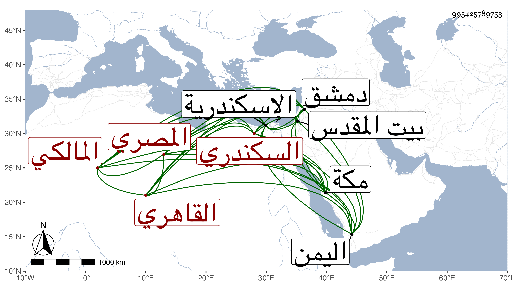

0902Sakhawi.DawLamic.ITO20230111-ara1.EIS1600.995425789753
Biography ID: 995425789753
265
أحمد بن محمد بن أحمد بن محمد بن محمد بن محمد بن عطاء الله الشهاب بن الشمس بن ناصر الدين السكندري الأصل المصري القاهري المالكي شقيق علي الآتي ويعرف كسلفه بابن التنسي . ولد تقريبا قريب العشرين وثمانمائة ونشأ فحفظ القرآن والرسالة وابن الحاجب وبحث فيهما عند الزين عبادة بل حضر دروس البساطي وغيره وفهم ونبل ولكن لم يلبث أن ترك تصديقا لؤيا عبرها له أول شيخيه وجلس عند أبيه بمسجد الفجل شاهدا رفيقا للقرافي ونحوه فأتعب نفسه ذلك ، وتولع بالتجارة وسافر فيها بنزر يسير جدا بعد استئذان أبويه إلى الاسكندرية غير مرة فنتج ولا زال يترقى حتى تمول جدا وعد في ذوي الوجاهات سيما مع تموله وبهائه ونورانيته ومديد قامته وذكره بعلي الهمة والفتوة وسرعة الحركة ، وحج أوائل اشتغاله بالتجارة سنة أربعين وكانت الوقفة الجمعة ثم تكرر حجه بل سافر إلى بلاد اليمن ودمشق فما دونها ووصل الجون وزار بيت المقدس وغيرها وخالط الأكابر سيما عظيم الدولة الجمالي ناظر الخاص وبعده أخذ في الانهباط إلى أن صار كآحاد الناس مقيما بالبرقوقية وذكر لي أن همته للجماع انقطعت من مدة متطاولة وأنه عرض على ابن الهمام حين رجوعه مع جانبك الجداوي من مكة جميع ما يحتاج إليه في رجوعه بحيث لا يحتاج إلى المشار إليه رام بذلك التقرب لخاطره فقال له يا أحمد إن تسكت وإلا أعلمته بهذا فكف . مات في المحرم سنة سبع وتسعين رحمه الله وعوضه الجنة .
